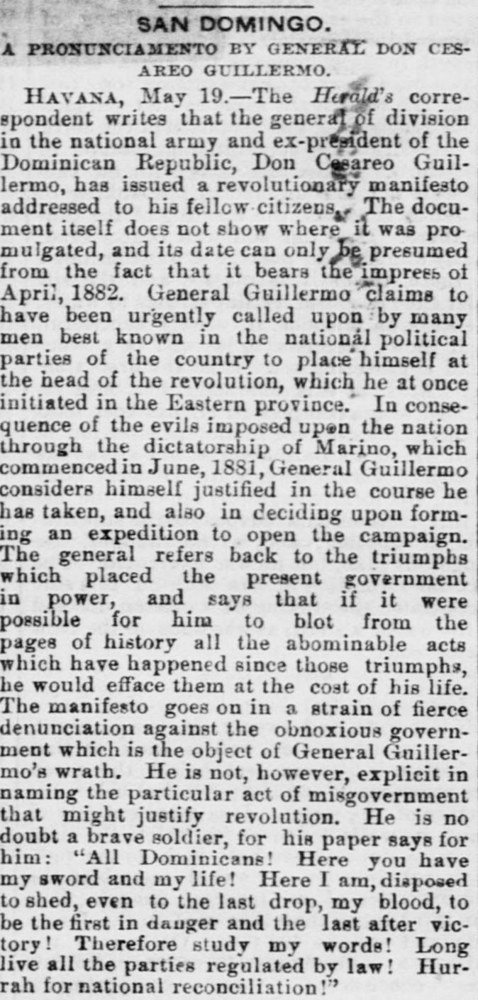
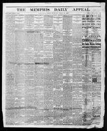

It ia reported that crape has been affixed to the doorSe informa que se ha colocado un crespón en la puerta
Memphis Daily Appeal. Memphis, Tenn., May 21, 1882. Page 1. Published by S.T. Seawell & W.N. Stanton, -1886. A daily newspaper, 1847–1886.Memphis Daily Appeal. Memphis, Tenn., 21 de mayo de 1882. Página 1. Publicado por S.T. Seawell & W.N. Stanton, -1886. Periódico diario, 1847–1886. View the originalVer el original


See the full pageVer la página completaA Havana report of May 19 says General Cesareo Guillermo, a general of division in the national army and ex-president of the Dominican Republic, has issued a revolutionary manifesto to his fellow citizens, bearing an April 1882 imprint. Guillermo claims he was urgently called upon by leading men in the national political parties to head a revolution, which he initiated in the Eastern province against the evils imposed by the dictatorship, and that he decided to form an expedition to open the campaign.Un informe de La Habana del 19 de mayo dice que el general Cesáreo Guillermo, general de división del ejército nacional y expresidente de la República Dominicana, ha emitido un manifiesto revolucionario a sus conciudadanos, con pie de imprenta de abril de 1882. Guillermo afirma que fue llamado urgentemente por hombres destacados de los partidos políticos nacionales para encabezar una revolución, que inició en la provincia del Este contra los males impuestos por la dictadura, y que decidió formar una expedición para abrir la campaña.
FULL TEXT:TEXTO COMPLETO:
SAN DOMINGO.SANTO DOMINGO.
A PRONUNCIAMENTO BY GENERAL DON CESAREO GUILLERMO.UN PRONUNCIAMIENTO DEL GENERAL DON CESÁREO GUILLERMO.
HAVANA, May 19.--The Herald's correspondent writes that the general of division in the national army and ex-president of the Dominican Republic, Don Cesareo Guillermo, has issued a revolutionary manifesto addressed to his fellow citizens. The document itself does not show where it was promulgated, and its date can only be presumed from the fact that it bears the impress of April, 1882. General Guillermo claims to have been urgently called upon by many men best known in the national political parties of the country to place himself at the head of the revolution, which he at once initiated in the Eastern province. In consequence of the evils imposed upon the nation through the dictatorship of Marino, which commenced in June, 1881, General Guillermo considers himself justified in the course he has taken, and also in deciding upon forming an expedition to open the campaign. The general refers back to the triumphs which placed the present government in power, and says that if it were possible for him to blot from the pages of history all the abominable acts which have happened since those triumphs, he would efface them at the cost of his life. The manifesto goes on in a strain of fierce denunciation against the obnoxious government which is the object of General Guillermo's wrath. He is not, however, explicit in naming the particular act of misgovernment that might justify revolution. He is no doubt a brave soldier, for his paper says for him: "All Dominicans! Here you have my sword and my life! Here I am, disposed to shed, even to the last drop, my blood, to be the first in danger and the last after victory! Therefore study my words! Long live all the parties regulated by law! Hurrah for national reconciliation!"LA HABANA, 19 de mayo.—El corresponsal del Herald escribe que el general de división en el ejército nacional y ex presidente de la República Dominicana, Don Cesáreo Guillermo, ha emitido un manifiesto revolucionario dirigido a sus conciudadanos. El documento mismo no muestra dónde fue promulgado, y su fecha solo puede presumirse del hecho de que lleva la impronta de abril de 1882. El general Guillermo reclama haber sido llamado urgentemente por muchos hombres mejor conocidos en los partidos políticos nacionales del país a colocarse a la cabeza de la revolución, que de inmediato inició en la provincia Oriental. A consecuencia de los males impuestos sobre la nación a través de la dictadura de Marino, que comenzó en junio de 1881, el general Guillermo se considera justificado en el curso que ha tomado, y también en decidirse a formar una expedición para abrir la campaña. El general se refiere a los triunfos que colocaron al presente gobierno en el poder, y dice que si le fuera posible borrar de las páginas de la historia todos los actos abominables que han sucedido desde esos triunfos, los borraría al costo de su vida. El manifiesto continúa en un tono de feroz denuncia contra el odioso gobierno que es el objeto de la ira del general Guillermo. No es, sin embargo, explícito al nombrar el acto particular de mal gobierno que pudiera justificar la revolución. Sin duda es un soldado valiente, pues su papel dice por él: «¡Todos los dominicanos! ¡Aquí tienen mi espada y mi vida! ¡Aquí estoy, dispuesto a derramar, hasta la última gota, mi sangre, a ser el primero en el peligro y el último después de la victoria! ¡Por tanto estudien mis palabras! ¡Vivan todos los partidos regulados por la ley! ¡Hurra por la reconciliación nacional!»